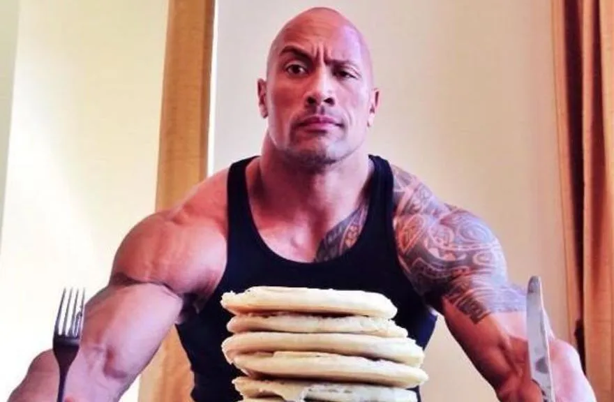
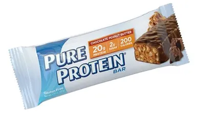
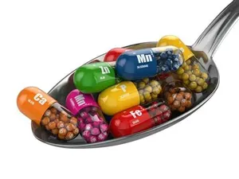
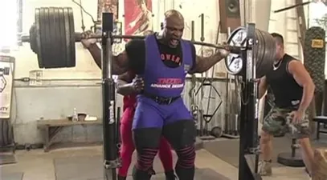

La nutrition

La prisse de masse
Les conseils pour réussir une prise de masse
Beaucoup se demandent comment prendre de la masse. Les clés pour réussir sa prise de masse tiennent en deux mots seulement: nutrition et entrainement. Cela prend plus ou moins de temps selon les morphologies et certains doivent s’aider de compléments adaptés de type weight gainers. Bref, ça prendra le temps qu’il faut, mais ça marchera mieux si vous suivez ces conseils de bon sens… Certes, la nutrition est fondamentale, mais elle n’a de sens qu’accompagnée d’un bon entrainement de prise de masse.
Règle N°1 : Manger, manger, manger…
La première erreur des débutants est un apport calorique insuffisant. Dans le but de prendre du muscle sec, ils ne mangent pas suffisamment de peur de prendre du gras et espèrent prendre de la masse avec un déficit calorique. Une des solutions consiste à ajouter des féculents lors de vos repas principaux pour augmenter votre apport calorique ou encore à utiliser un complément de type weight gainer, surtout si vous avez du mal à grossir.
Règle N°2 : Boire de l’eau dans 20 ans y'en aura plus
Le muscle a aussi besoin d’eau pour se construire. Pour être certain de boire suffisamment, n’attendez pas d’avoir soif et buvez par petites gorgées, surtout lors de votre entrainement. L’hydratation est essentielle pour un muscle plus plein et volumineux.
Règle n°3 : Privilégier les protéines
Vous avez besoin surtout de protéines pour développer votre croissance musculaire. Mettez-en au menu de chacun de vos repas y compris le matin. Faites 5 ou 6 repas par jour toujours avec des protéines. Les collations de protéines vous seront d’une aide précieuse.

Règle N°4 : Manger des graisses !
Dommage, les débutants ont tendance à zapper les graisses de peur de prendre du gras, or ces graisses sont nécessaires au cholestérol qui intervient dans le métabolisme des hormones. Mais attention, ça ne veut pas dire des chips ou du saucisson, mais plutôt de l’huile d’olive, des noix, de l’avocat, du saumon, des sardines, tous riches en omega-3.
Règle N°5 : Penser aux vitamines et minéraux
Elles sont vraiment nécessaires à la synthèse des protéines et permettent à vos muscles de profiter pleinement des acides aminés. De plus, ils sont le garant d’une bonne santé et d’un système immunitaire performant.
Les 5 règles d’entrainement en Prise de Masse
Règle N°1 : Commencer par l’échauffement.
Bien s’échauffer est valable pour tout sport. Commencez par des séries avec des charges légères. Vous éviterez les blessures. Gardez l’étirement pour après la séance. Il ne faut jamais étirer un muscle froid.

Règle N°2 : Faire des séries courtes, charges lourdes
Entrainez-vous dur avec des charges lourdes, cela fera grossir vos muscles. Faites des séries courtes, car l’endurance ne vous aidera pas à développer vos muscles. L’idéal est de faire entre 6 et 8 reps par série, en faisant 3 à 8 exercices différents par groupe musculaire. Votre séance durera 45 mn à 1H maxi. Changez l’ordre de vos exercices ou votre routine d’entrainement toutes les 6 semaines pour éviter que le corps s’habitue au stress.

Règle N°3 : Travailler les grands groupes de muscles
Pour la prise de masse, il faut éviter de travailler les muscles isolés. Cibler les biceps, c’est bien mais ce n’est pas ça qui vous fera gagner de la masse. Au contraire, votre métabolisme fonctionnera à plein régime, si vous entrainez tout votre corps. Vous produirez un plus grand nombre d’hormones. Surtout, ne faites pas l’erreur de ne travailler que le haut du corps. Pour l’équilibre de votre ligne, faites du squat, vous renforcerez vos cuisses et les rendrez plus massives. Vous pouvez, bien sûr, alterner les séances haut du corps/ bas du corps, mais si vous n’entrainez que le haut plusieurs jours, vos muscles n’auront pas le temps de récupérer.
Règle N°4 : Pour grossir, éviter le cardio
Même si on vous dit que le cardio c’est bien, ce n’est pas une bonne idée, car vous allez brûler des calories, mais aussi gaspiller vos acides aminés. Si vous tenez absolument à en faire, pour contrôler votre masse grasse, ne casez pas vos séances cardio le même jour que la musculation. Ne le faites pas plus de 3 fois par semaine et pas non plus en début de séance. En effet, vous devez garder votre énergie pour pousser lourd et ne pas épuiser votre muscle.

Règle N°5 : Apprendre à vous reposer
otre entrainement doit être planifié uniquement un jour sur deux (3 à 4 séances maxi par semaine), 1H maxi et vous devez vous reposer entre les séries. Votre sommeil est également très important. L’idéal est de dormir 8H par nuit pour récupérer. Sans cela, vous vous exposez au surentrainement et vous n’aurez pas de résultats en termes de gain de masse. Vous risquez au contraire de voir vos muscles fondre. Evitez aussi toute forme de stress qui fera grimper votre cortisol (hormone qui va compromettre fortement l’anabolisme musculaire). Avec les meilleurs conseils de nos experts pour prendre de la masse rapidement, vous avez désormais en mains toutes les clés, qu’elles soient nutritionnelles ou d’entrainement, pour réussir votre prise de masse.
L'importance de l'alimentation
Quel est le rôle de l’alimentation dans la prise de masse?
Pour gagner en masse et en volume, votre alimentation est primordiale.
Généralement les personnes qui souhaitent prendre de la masse ont des physiques très secs, voire
même ectomorphes. Si tel est votre cas, et que vous tentez la prise de masse, vous voudrez
certainement des résultats rapides, quitte à prendre un peu de gras.
Le nombre de calories que vous allez consommer dans la journée va donc être déterminant,
puisqu’il faudra en consommer plus que ce que vous dépensez.
Le tout bien sûr est d’augmenter les calories progressivement en ajoutant plus de glucides et
plus de protéines à vos repas prise de masse.
En effet, si vous êtes très sec, vous avez probablement un métabolisme assez rapide qui vous
fait brûler beaucoup, mais cela ne ne veut pas pour autant dire qu’il faut manger n’importe quoi
!
Ce qu’il faut retenir de votre programme alimentation prise de masse:
- Un total de 3000* calories par jour
- Un ratio de 25% de protéines, 60% de glucides et 15% de lipides
- 6 repas ou collations par jour, toutes les 3 à 4h
- 2,5 litres d’eau environ par jour
*Vos apports alimentaires évolueront en fonction de votre poids.
Quel est le rôle des macronutriments dans la prise de masse?
Le rôle des protéines
Dans le cadre d’un régime prise de masse, une bonne quantité de protéines à consommer est
indispensable. En effet, ce sont elles qui vont nourrir le muscle, et permettre entre autre la
prise de masse musculaire. Les protéines sont en réalité les briques du corps car les acides
aminés (essentiels et non-essentiels) qu’elles contiennent sont indispensables à la nutrition du
muscle et à sa réparation après l’effort.
A chaque effort musculaire intense, le muscle se détruit (catabolisme). Cette phase est suivie,
si l’apport protéique est suffisant, d’une réaction inverse de reconstruction musculaire
(anabolisme) génératrice de la prise de masse musculaire.
Les meilleures sources de protéines sont la viande (poulet, boeuf), les oeufs, le poisson (thon,
saumon, cabillaud), les produits laitiers. Lorsqu’il est difficile d’atteindre l’apport
nutritionnel journalier recommandé d’un point de vue quantitatif ou qualitatif, une collation
prise de masse à base de gainer ou de whey protéine peut vraiment faire la différence.
Le rôle des lipides
Ajouter des lipides à votre alimentation prise de masse est nécessaire. Mais lorsqu’on parle de lipides, attention à ne pas confondre mauvaises graisses et bonnes graisses. Les bonnes graisses se trouvent dans les poissons gras, les oléagineux, les huiles (olive, lin, colza). Pour ce type d’objectif, il n’est évidemment pas question de consommer des mauvaises graisses tout au long de la journée, mais de puiser dans les bons aliments pour s’assurer un apport journalier en bonnes graisses.
Le rôle des glucides
Dans un programme nutrition prise de masse, les glucides sont absolument indispensables ! Votre
alimentation doit donc permettre de charger les réserves de glucides (glycogènes) en intégrant à
chaque repas du riz, des pâtes, des pommes de terre ou des céréales.
Les glucides ou hydrates de carbone sont nécessaires à l’organisme pour fournir suffisamment
d’énergie lors d’un entraînement régulier et intensif. Les glucides soutiennent également le
processus d’anabolisme musculaire qui assure un gain de volume. Préférez tout de même les
indices glycémiques bas pour éviter les pics d’insuline, et le stockage des graisses dans les
tissus adipeux.
Le rôle de l’insuline dans le stockage des graisses
L’insuline est une hormone produite par le pancréas qui intervient dans le cycle du glucose.
Elle permet de maintenir les niveaux de sucre dans le sang à un niveau stable. En cas d’excédent
de sucre (pic de glycémie), c’est cette hormone qui va permettre de stocker le sucre dans les
muscles (réserve de glycogène), le foie (glycogène également) ou dans les cellules graisseuses.
Les deux premiers étant rapidement saturés, le sucre excédentaire va être stocké dans les tissus
adipeux, et donc favoriser la prise de poids.
Ce qui est intéressant ici c’est surtout le rôle anabolisant de l’insuline. Une forte dose de
glucides et d’acides aminés pris au réveil et juste après l’entrainement favorisent la sécrétion
d’insuline et par là même la synthèse des protéines. Le choix d’aliments à faible indice
glycémique et à digestion plus lente permet une diffusion progressive de l’insuline. Dans ce cas
précis, l’insuline ne favorise pas la prise de gras mais est une alliée pour la prise de muscle.
| Plan alimentaire prise de masse | ||
|---|---|---|
| Repas | Aliments et quantités | |
| Petit déjeuner |
-130g Muesli -200 ml Lait demi-écrémé -150g Fromage blanc nature 0% MG -130g Banane |
|
| Collation du matin |
-150g Pomme -50g Whey |
|
| Déjeuner |
-150g Filet de poulet cuit -250g pâtes cuites -100g Concentré tomate -20 ml Huile d'olive |
|
| Collation après-midi |
-50g whey -25g Amandes |
|
| Dîner |
-150g Steak haché boeuf 5% MG -200g Riz complet cuit -150g Brocoli cuit -20 ml Huile d'olive ( ou autre ) |
|
N’oubliez pas que si votre nutrition compte énormément pour la réussite de votre objectif, seul un entrainement adapté vous permettra de faire grossir vos muscles. Un travail sur les grands groupes musculaires avec des exercices poly-articulaires fera véritablement la différence et vous aidera à bâtir un physique plus massif.
La sèche musculaire
Comment sécher rapidement et perdre l'excès de gras sans perdre de muscle
En quoi consiste une sèche musculaire?
En cas de restriction calorique, le corps tourne à l’économie et brûle moins de calories.
L’entrainement ne suffit pas.
Vous entrainer plus dur tout en limitant les calories ne conduira qu’à détruire vos muscles, pas
à brûler les graisses.
L’alimentation et notamment le choix de vos aliments sera déterminant.
Cet état de sèche tant convoité va se jouer sur l’équilibre entre taux de masse grasse/ masse
maigre.
Vous l’obtiendrez en combinant une diète et un entrainement spécifiquement adaptés.
Qu’est-ce qu’une sèche en musculation ?
C’est l’étape qui suit généralement la prise de muscle.
La sèche musculation vise à conserver le muscle acquis tout en puisant dans les réserves de
graisse pour une meilleure définition musculaire.
C’est cette définition qui rend le muscle plus apparent et le fait ressortir davantage. Dans la
définition de la sèche musculaire, « sécher » veut dire faire diminuer le taux de graisse
corporelle.
Il s’agit d’éliminer au maximum la couche de gras (et d’eau) sous la peau, sans perdre de
muscle.
Il y a deux manières de faire une sèche musculaire : manger moins ou se dépenser plus.
Mais, ce n’est pas un simple régime. Si vous mangez moins en quantité, vous allez devoir faire
attention à ne pas perdre de muscle.
Vous devez combiner efficacement une diète adaptée, composée de protéines de qualité et calibrée
en glucides, avec un entrainement à majorité cardio.
Vous activerez le métabolisme, accélérerez la thermogenèse (brûle-graisses). Pour éliminer
l’excédent d’eau et les derniers centimètres, les suppléments feront le reste.
Comment faire une sèche en musculation?
Quel entrainement pour la sèche?
Le cardio: En plus de la musculation traditionnelle, il est plus simple d’ajouter du cardio,
matin ou soir, pour augmenter les dépenses d’énergie.
Car trop limiter l’alimentation a pour conséquence de ralentir le métabolisme. Ajoutez 45 mn à
1h de cardio, en plus de vos entrainements de musculation.
Cela permet de ne pas avoir besoin de trop limiter les calories. Dans un premier temps, c’est
efficace pour aider à brûler et éliminer les graisses de réserve et à faire baisser le taux de
masse grasse.
La musculation: L’entrainement de musculation reste sensiblement le même que pour la prise de
muscle.
Toutefois, l’accent sera mis sur les séries longues avec des charges un peu moins lourdes pour
diminuer le stress de l’entrainement hyper intensif.
Sinon, le muscle manquera de ressources pour récupérer pleinement. En effet, les séries longues
mobilisent la circulation et réduisent les réserves d’énergie dans le muscle, ce qui a pour
effet de le dessiner, en le séchant.
Un temps d’entrainement plus long déclenche l’endurance, ce qui augmente également la dépense
calorique. La durée maximum des séances sera d’environ 1h15-1h30.
Quelle alimentation pour la sèche?
Les calories: L’accent sera mis essentiellement sur la qualité des nutriments et le timing.
Le principe consiste à dépenser plus de calories qu’on en consomme.
Le régime et l’entrainement créent un déficit de calories.
C’est ce déficit qui oblige le corps à sécher en puisant dans ses réserves.
La qualité: Pour créer ce déficit, sans risquer de perdre du muscle, il est nécessaire
d’apporter au corps des calories venant d’aliments de qualité.
C’est-à-dire d’augmenter l’apport en protéines, de réduire les glucides sans les supprimer
complètement. Veillez aussi à garder les bons lipides (acides gras insaturés) qui favorisent la
prise de muscle.
Privilégiez l’apport en minéraux et vitamines qui fixent les protéines.
Ce choix des nutriments est nécessaire pour que l’organisme utilise en priorité ses graisses de
réserve et ne se mette pas à détruire du muscle.
Les glucides: On pense souvent que les glucides empêchent de perdre du gras.
S’il est vrai que les régimes sans hydrates de carbone permettent de perdre rapidement du poids,
ils ne font pas la différence entre perte de gras et perte de muscle.
L’erreur consiste souvent à supprimer tous les hydrates de carbone ou glucides.
Dans ce cas, les muscles vont manquer d’énergie pour se reconstituer.
La double absorption protéines + hydrates de carbone permet de garder le muscle acquis.
La bonne association: Seul un régime qui comporte à la fois des protéines et des glucides
choisis maintient l’énergie suffisante pour continuer à s’entrainer et fabriquer du muscle.
Par contre, une fois que le corps a utilisé tous les hydrates de carbone disponibles, il est
forcé de puiser dans ses réserves.
C’est là qu’il trouve l’énergie nécessaire pour maintenir les muscles et s’entrainer.
D’où l’importance de bien répartir ces prises de glucides au cours de la journée pour ne pas
entamer ses réserves musculaires.
La répartition: La répartition des repas dans la journée (5 à 6 par jour) ainsi que le ratio «
Protéines, Lipides, Glucides » seront déterminants pour le régime de sèche.
Manger souvent réactivera ainsi le métabolisme toutes les 3 à 4 H. Les protéines sont
indispensables lors de la récupération pour régénérer le muscle et l’aider à grossir.
Mais leur qualité sera bien meilleure sous forme de suppléments que sous forme d’aliments.
Ces derniers nécessitant une préparation ou cuisson sont souvent difficiles à doser en matières
grasses.
La digestion des protéines demande un effort de l’organisme et accélère encore la dépense
calorique. De plus, elles ont un effet coupe-faim bien connu.
Les lipides: Ne supprimez pas pour autant les lipides. Ils jouent un rôle important dans la
prise de muscle.
Limitez plutôt leur prise à une cuillerée d’huile riche en oméga 3 ou oméga 6, ou encore une
poignée de fruits secs.
Les vitamines et minéraux: Il est difficile pour certains d’absorber un grand nombre de fruits
et légumes, au cours de la journée, tout en contrôlant les glucides.
C’est pourquoi les compléments vitaminés sont un bon compromis pour assurer le ratio idéal
nécessaire au maintien de l’énergie et éviter toute carence.
Les IG bas: Pour les glucides, leurs portions seront d’abord réduites progressivement en
quantité. En deuxième partie de journée , elles seront remplacées par des légumes.
Les glucides non raffinés comme le riz ou le pain complet, seront réservées pour les rations
indispensables quotidiennes, le matin ou le midi de préférence.
En évitant les pics d’insuline générés par un apport massif de glucides, et en consommant
davantage de protéines, on évitera aussi cette sensation d’alerte qu’est la faim lorsque le taux
de glucides est trop bas.
L’estomac sera calé avec les protéines et les légumes contenant des fibres.
Le reste de l’énergie sera apporté par des glucides à Index glycémique bas (voir table des
calories) qui évitent au maximum le stockage de masse grasse.
La fatigue légère du départ due à ce déficit va rapidement se transformer en énergie positive
pour l’entrainement.
Combien doit durer une sèche?
La sèche n’est pas un état permanent et si on veut bien la réaliser, il faut la limiter dans le
temps.
déalement, on fait une sèche entre deux prise de masses ou avant l’été, c’est-à-dire une à deux
fois par an.
Le but est de retrouver les muscles bien présents mais disparus sous une couche de graisse.
Une sèche ne doit en principe pas durer plus de trois mois maximum car c’est très éprouvant pour
l’organisme.
La difficulté lorsqu’une sèche dure longtemps est la fatigue ressentie.
Car il est bien compliqué de concilier entrainement intense et régime hypocalorique.